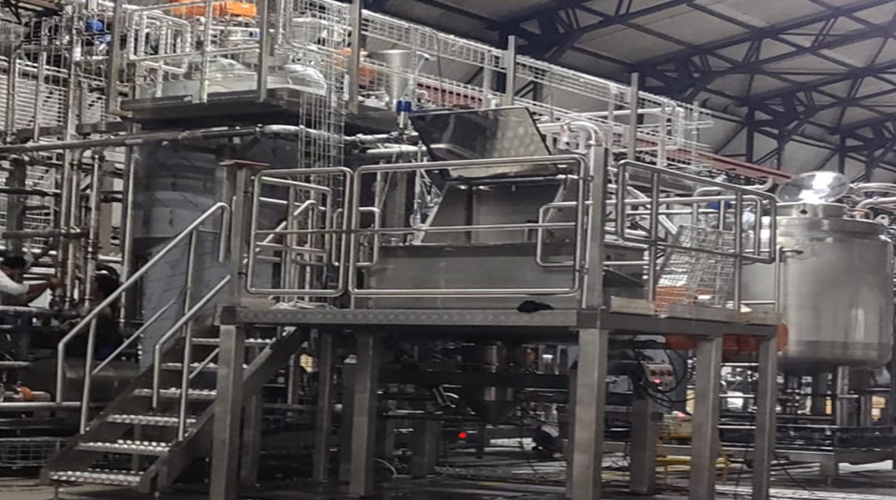
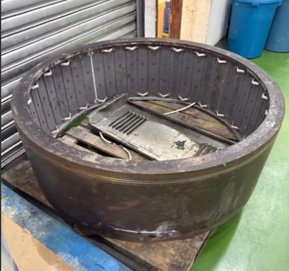
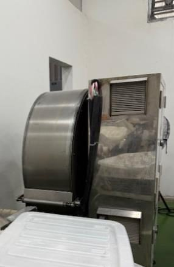

AMSC FactoryLink is an industrial engineering and machine shop built for restorations, retrofits, and automation projects other shops turn down. Service at the core, trading with purpose.
Manufacturers who've put their lines in our hands
Manufacturers usually come to us after another machinist or fabrication shop has already said no — too complicated, too old, not enough documentation. That gap between worn mechanical systems and modern electronic controls is exactly where we work.
Turning manual production steps into mechanized systems that don't need a person doing it by hand.
Wiring sensors, PLCs, and control systems into equipment that used to run on relays and guesswork.
Mapping the process, cutting the waste, and training the floor to keep it that way.
Preventive and predictive maintenance built around your actual equipment, not a generic checklist.
Jigs, fixtures, and retrofits sized for what a small or mid-size line can actually justify.
Outsourced mechanical, electrical, and electronic upkeep — including the after-hours breakdown call.
Other machinists had already declined the job: the drum was too far gone, and nobody wanted to touch it without full documentation. AMSC took the housing down to bare metal, remachined the drum on our own lathes, and got the line back into production on schedule.

Before
AfterConceptualize and model the fix or the retrofit in CAD before a single part is cut.
Machine, fabricate, and wire the solution in our own shop, on our own equipment.
Install, commission, and hand the line back running at spec.
Stay on as your third-party maintenance partner, on call around the clock.